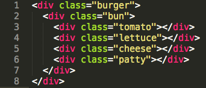
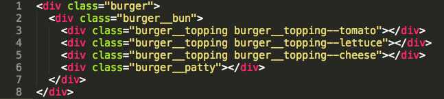

Cogapp Open Studios
Diacritics and ligatures and glyphs—oh my!
Not !important—BEM and CSS
GlusterF*ck—avoiding a $10,000 AWS trap
OWASP top ten
Accessibility in web design
Diacritics and ligatures
and glyphs—oh my!
Transliteration
Converting one script to another
Transliteration is not transcription
Mainly concerned with preserving spelling
Transliteration
מאטל פייסי דעם חזנס
Moṭl Peysi dem ḥazns
Standards
ALA-LC
American Library Association - Library of Congress
YIVO
Institute for Jewish Research
Transliteration table
ע — ʻ (ayn)
ש — ś
װ — ṿ (only if a consonant)
It's never that simple
Glyphs
LATIN SMALL LETTER A
U+0061 — a
BLACK HEART SUIT
U+2665 — ♥
CAT FACE WITH WRY SMILE
U+1F63C — 😼
It's never that simple
Empirical analysis!
Precomposed vs decomposed
LATIN SMALL LETTER T WITH DOT BELOW
LATIN SMALL LETTER T + COMBINING DOT BELOW
ṭ — ṭ
ṭ — ṭ
ṭ — ṭ
ṭ — ṭ
Conversion to pre-composed characters
unicodedata.normalize('NFC', 'ṭ')
unicodedata.normalize('NFD', 'ṭ')
Solution
- Google Noto
- Add the missing glyphs to the font
Lessons learned
- Caveat - some of this is specific to Yiddish literature
- Check what characters you need to support beforehand
- Utilise domain knowledge
- Test your fonts
- Precomposition is good
Questions?
Not !important;
Some thoughts on BEM and CSS
A lightning talk by Jon White / @superbland
CSS is really good when...
- Make changes without breaking stuff
- You can easily tell what a class does
- Figuring out what does what is pretty easy
- I write some new styles and it works
CSS is not so good when...
- Changes that solve one problem create another
- Unnecessary weight in the inheritance chain
- Developers who prefer brevity over clarity
- I need to resort to !important; rules or concoct clever inheritance hacks
How things get out of hand
Abridged version
BURGER

The Burger Demo
Nice, terse, 'semantic' class names
But...

The Burger Demo
I can fix this!
I have a better idea...
Just don't do that?
BEM
- Blocks - Components not bound my context
- Elements - Belonging to a block (double underscores __)
- Modifiers - Used to specify variations on blocks and elements (double hyphens --)
The Burger Demo
1 BEM Burger, coming up!

BEM is UGLY and I'm not stupid

- BEM isn't what most people consider beautiful
- It's all about developer confidence;
- BEM helps you write well structured, easily maintainable, robust CSS that can be easily understood, and that is a good thing.
Find out more
GlusterF*ck
Avoiding a $10,000 AWS trap
Adrian Hindle @cogapp
Qdl.qa
1M+ pages
25 servers hosted on AWS
What happened?
Started receiving different alerts
Cloudwatch monitoring stopped
Gluster server stopped working
What is GlusterFS
Scalable network filesystem


Fixing GlusterFS
Documentation / IRC / Mailing lists
Created a test environment


New Gluster cluster

Getting the data

How much?
Length of time for retrieval: 4 hours| Retrieval Cost | $9,900.00 |
| Transfer Cost | $449.91 |
| Total cost | $10,349.91 |
$10,000.00


But
Length of time for retrieval 72 hours| Retrieval Cost | $547.25 |
| Transfer Cost | $449.91 |
| Total cost | $997.16 |
#!/bin/sh
List every file in Glacier
Foreach file {
Start restore
Pause
}
Restore 500,000+ JPEG 2000 (5TB+)
Restoration took 4 - 5 days
Download speed 150 - 200 images/min
Download ~125 hours
The following Monday...